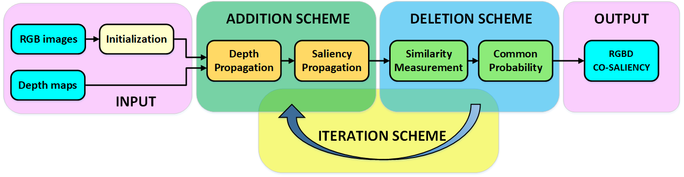

An Iterative co-Saliency framework for RGBD images
Introduction:
-
In this paper, we propose an iterative RGBD co-saliency framework, which utilizes the existing single saliency maps as the initialization, and generates the final RGBD cosaliency map by using a refinement-cycle model. Three schemes are employed in the proposed RGBD co-saliency framework, which include the addition scheme, deletion scheme, and iteration scheme. The addition scheme is used to highlight the salient regions based on intra-image depth propagation and saliency propagation, while the deletion scheme filters the saliency regions and removes the non-common salient regions based on inter-image constraint. The iteration scheme is proposed to obtain more homogeneous and consistent co-saliency map. Furthermore, a novel descriptor, named depth shape prior, is proposed in the addition scheme to introduce the depth information to enhance identification of co-salient objects. The proposed method can effectively exploit any existing 2D saliency model to work well in RGBD co-saliency scenarios. The experiments on two RGBD cosaliency datasets demonstrate the effectiveness of our proposed framework.

-
Runmin Cong, Jianjun Lei, Huazhu Fu, Qingming Huang, Xiaochun Cao, Chunping Hou, An Iterative co-Saliency framework for RGBD images, IEEE Transactions on Cybernetics, vol. 49, no. 1, pp. 233-246, 2019. [PDF]
-
The proposed co-saliency framework is evaluated on two RGBD benchmarks: the RGBD Cosal150 dataset [1] and the RGBD Coseg183 dataset [2]:
RGBD Co-saliency Results [Download Link] -
[1] R. Cong, J. Lei, H. Fu, Q. Huang, X. Cao, and C. Hou, "Co-saliency detection for RGBD images based on multi-constraint feature matching and cross label propagation," IEEE Transactions on Image Processing, vol. 27, no. 2, pp. 568-579, 2018. [Project]
[2] H. Fu, D. Xu, S. Lin, and J. Liu, “Object-based RGBD image co-segmentation with mutex constraint,” in Proc. CVPR, 2015, pp. 4428-4436. [Project]